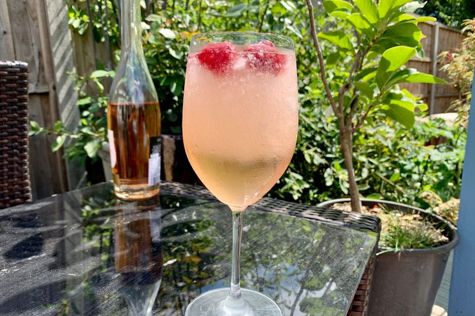

White Peach Sangria
A refreshingly white wine sangria that is always a hit at parties.

Description
An incredibly simple recipe that just needs a little
elbow grease, ingredients,
and can be done inebriated.
Theoretically...
Additional Info
Total Time: 2 hrs 10 mins
Prep: 10 mins
Additional Time: 2 hrs
Servings: 6
Yield: 6 servings
Ingredients
- 1 bottle of dry white wine (750 ml)
- 3/4 cup peach flavored vodka
- 6 tbsp frozen lemonade concentrate thawed
- 1/4 cup white sugar
- 1 pound white peaches, pitted and sliced
- 3/4 cup seedless red grapes, halved
- 3/4 cup seedless green grapes, halved
Directions
- In a large pitcher, combine dry white wine, peach vodka, lemonade concentrate, and sugar
- Stir until sugar is dissolved
- Add sliced peaches, and red and green grapes
- Refrigerate sangria until well chilled, at least 2 hours, or overnight to blend flavors
- Serve over ice, and use slotted spoon to include sliced peaches and grapes when serving
Return to top